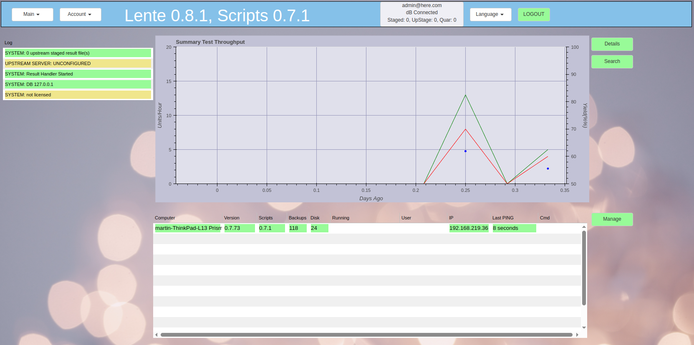

Screenshots¶
Lente screenshots.
Dashboard¶
Lente provides two dashboards. The first shown here shows a historical summary of units tested, pass/fail and yield, over the previous week. The table below shows the currently active test stations, and their status.
The second dashboard is for detailed results analysis. The important thing about this dashboard is that the results shown graphically or in the table are filtered by the current state of the “Select/Date” filters across the top of the dashboard.
The graph is a view of the previous week’s history of Pass/Fail/Yield numbers.
The right table is each result. By selecting a result in this table, a new tab is opened with the result details.
The table on the bottom left counts the various types of Fail tests.